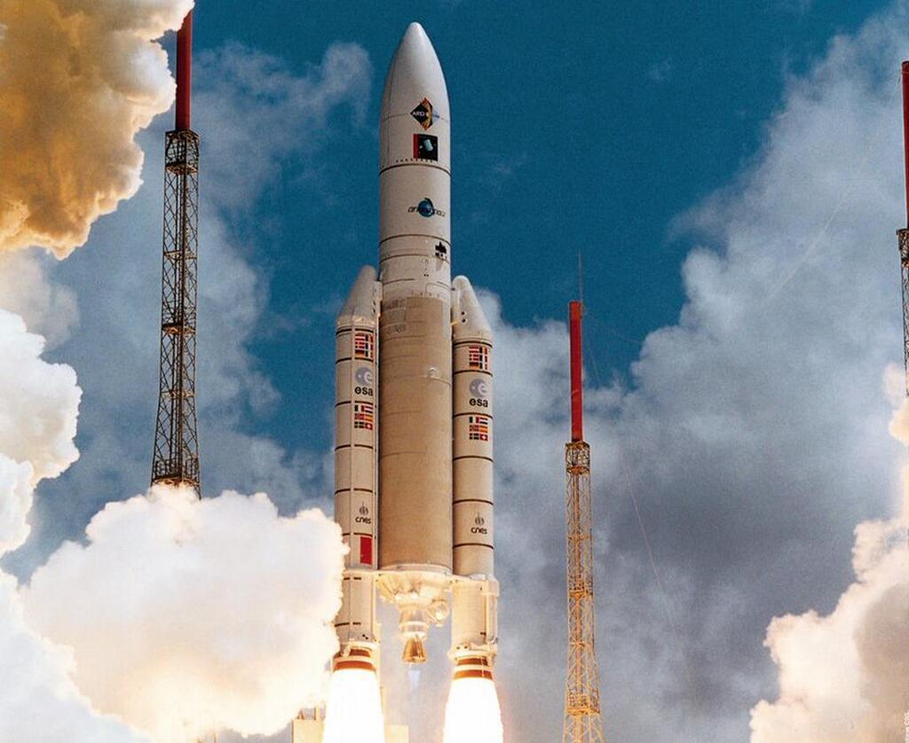
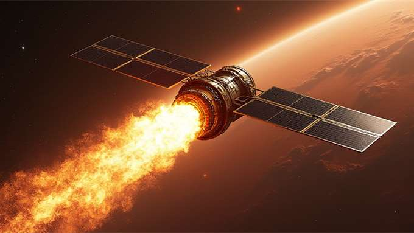
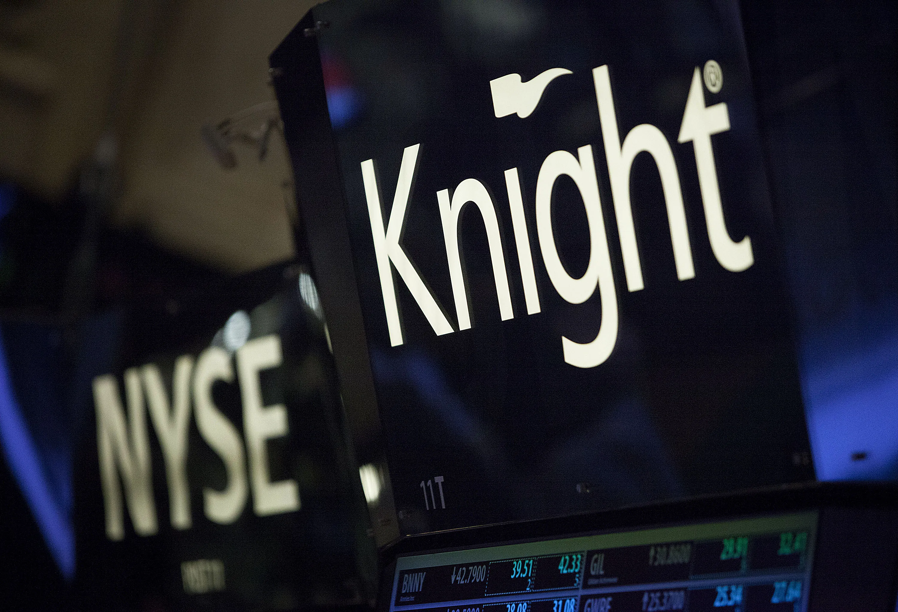
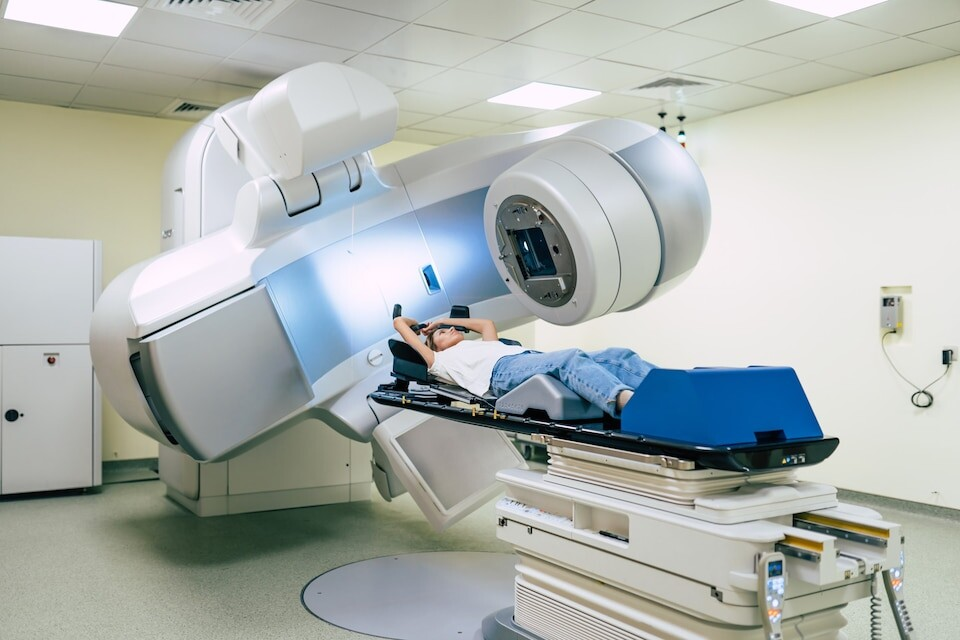
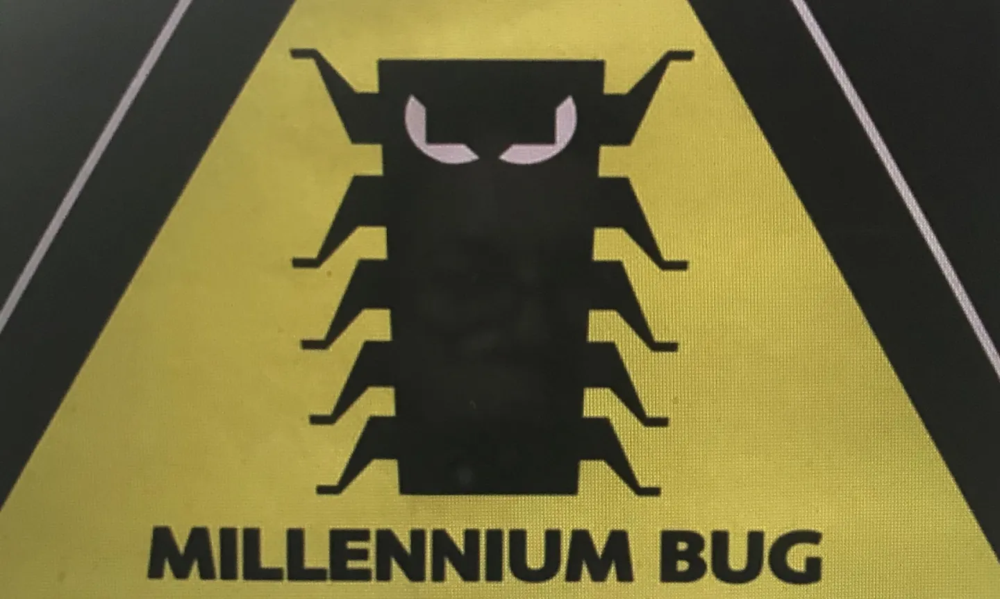
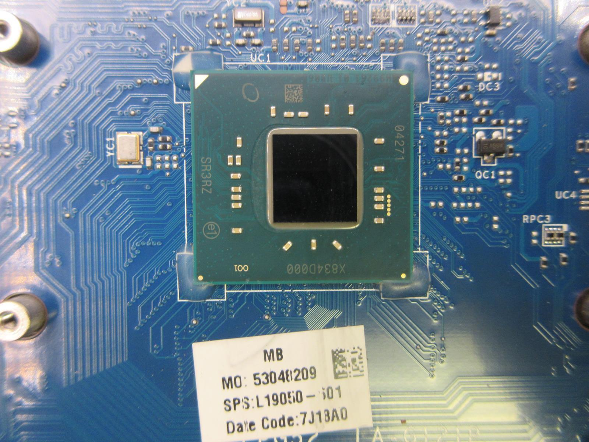
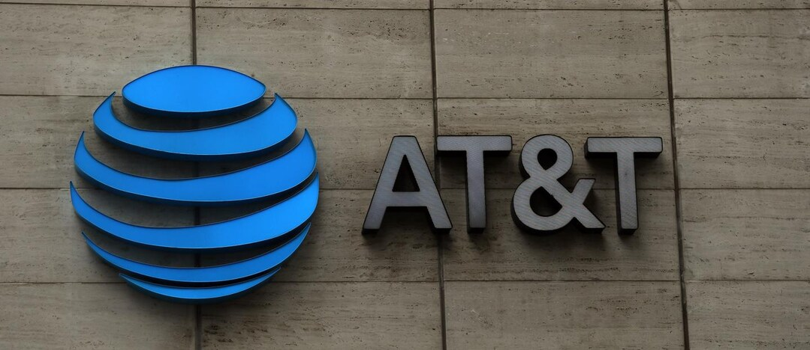

Circa 370 milioni di dollari: Il lancio dell'Ariane 5 fallì a causa di un bug nel software, con perdita di carichi scientifici.

Circa 193 milioni di dollari: Il Mars Climate Orbiter fu distrutto per un errore nelle unità di misura.

Circa 440 milioni di dollari in 45 minuti: Un aggiornamento difettoso causò operazioni errate nel trading.

Diverse vite umane: Bug nel software della Therac-25 causarono dosi letali di radiazioni.

Perdita di vite e milioni di dollari: Un errore nel sistema Patriot portò all'uccisione di 28 soldati.

Circa 100 miliardi di dollari: Il Millennium Bug richiese enormi investimenti per la prevenzione.

Circa 475 milioni di dollari: Un bug nei processori Intel Pentium causò errori di calcolo.
Perdita di un'auto: Un aggiornamento software causò il blocco dei freni in alcune auto.

Decine di milioni di dollari: Un difetto nel sistema AT&T causò un'interruzione di 9 ore.

Oltre 20 miliardi di dollari, molte vite perse: Il sistema MCAS del Boeing 737 Max portò a incidenti mortali.